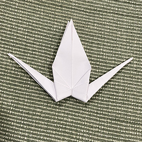
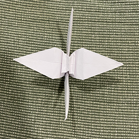
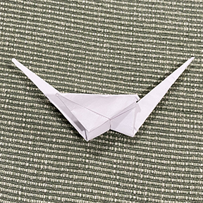

Start with a square piece of paper. Foil Paper is better since it is easier to fold with. A good measurement is 6”x6”

Fold the paper in half diagonally. make a triangle with the piece of paper

Fold the triangle in half again.